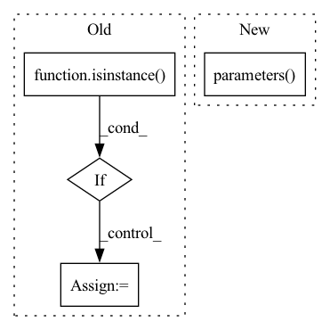

Pattern ID :13582
Before Change
the array (with values 0, 1 for each class) of binary prediction
_device = next(self.parameters()).device
if isinstance( input, np.ndarray) :
_input = torch.from_numpy(input).to(_device)
else:
_input = input.to(_device)
pred = self.forward(_input)After Change
self.eval()
_device = next(self.parameters()).device
_dtype = next(self.parameters() ).dtype
_input = torch.as_tensor(input, dtype=_dtype, device=_device)
if _input.ndim == 2:
_input = _input.unsqueeze(0) // add a batch dimensionIn pattern: SUPERPATTERN
Frequency: 4
Non-data size: 4
Instances Fragment ID: 45667786
Project Name: deeppsp/torch_ecg
Commit Name: a9fb65d4abae9cfa6e51ff1425979881a154b22d
Time: 2021-10-12
Author: wenh06@gmail.com
File Name: benchmarks/train_crnn_cpsc2020/model.py
M Class Name: ECG_CRNN_CPSC2020
N Class Name: ECG_CRNN_CPSC2020
M Method Name: inference(4)
N Method Name: inference(4)
M Parent Class: ECG_CRNN
N Parent Class: ECG_CRNN
M File Name: benchmarks/train_crnn_cpsc2020/model.py
N File Name: benchmarks/train_crnn_cpsc2020/model.py
M Start Line: 75
M End Line: 80
N Start Line: 75
N End Line: 81
Before Change
memo.add(value)
lr = cfg.SOLVER.OPTIMIZER.BASE_LR
weight_decay = cfg.SOLVER.OPTIMIZER.WEIGHT_DECAY
if isinstance( module, NORM_MODULE_TYPES) :
weight_decay = cfg.SOLVER.OPTIMIZER.WEIGHT_DECAY_NORM
elif key == "bias":
// NOTE: unlike Detectron v1, we now default BIAS_LR_FACTOR to 1.0
// and WEIGHT_DECAY_BIAS to WEIGHT_DECAY so that bias optimizer
// hyperparameters are by default exactly the same as for regular
// weights.
lr = cfg.SOLVER.OPTIMIZER.BASE_LR * cfg.SOLVER.OPTIMIZER.BIAS_LR_FACTOR
weight_decay = cfg.SOLVER.OPTIMIZER.WEIGHT_DECAY
params += [{"params": [value], "lr": lr, "weight_decay": weight_decay}]
optimizer = optim.SGD(
params,After Change
@staticmethod
def build(model, cfg):
optimizer = optim.SGD(
model.parameters() ,
lr=cfg.SOLVER.OPTIMIZER.BASE_LR,
weight_decay=cfg.SOLVER.OPTIMIZER.WEIGHT_DECAY,
momentum=cfg.SOLVER.OPTIMIZER.MOMENTUM, Fragment ID: 45667789
Project Name: megvii-basedetection/cvpods
Commit Name: df4be33a7792139213b4010095bb07589aec2096
Time: 2021-02-01
Author: zhubenjin@megvii.com
File Name: cvpods/solver/optimizer_builder.py
M Class Name: SGDBuilder
N Class Name: SGDBuilder
M Method Name: build(2)
N Method Name: build(2)
M Parent Class: OptimizerBuilder
N Parent Class: OptimizerBuilder
M File Name: cvpods/solver/optimizer_builder.py
N File Name: cvpods/solver/optimizer_builder.py
M Start Line: 42
M End Line: 66
N Start Line: 43
N End Line: 43
Before Change
_device = next(self.parameters()).device
batch_size, channels, seq_len = input.shape
if isinstance( input, np.ndarray) :
_input = torch.from_numpy(input).to(_device)
else:
_input = input.to(_device)
pred = self.forward(_input)
if self.n_classes == 2:
pred = self.sigmoid(pred) // (batch_size, seq_len, 2)After Change
self.eval()
_device = next(self.parameters()).device
_dtype = next(self.parameters() ).dtype
_input = torch.as_tensor(input, dtype=_dtype, device=_device)
if _input.ndim == 2:
_input = _input.unsqueeze(0) // add a batch dimension Fragment ID: 45667778
Project Name: deeppsp/torch_ecg
Commit Name: a9fb65d4abae9cfa6e51ff1425979881a154b22d
Time: 2021-10-12
Author: wenh06@gmail.com
File Name: benchmarks/train_crnn_cpsc2020/model.py
M Class Name: ECG_SEQ_LAB_NET_CPSC2020
N Class Name: ECG_SEQ_LAB_NET_CPSC2020
M Method Name: inference(4)
N Method Name: inference(4)
M Parent Class: ECG_SEQ_LAB_NET
N Parent Class: ECG_SEQ_LAB_NET
M File Name: benchmarks/train_crnn_cpsc2020/model.py
N File Name: benchmarks/train_crnn_cpsc2020/model.py
M Start Line: 167
M End Line: 173
N Start Line: 165
N End Line: 171
Before Change
"""
assert 0.0 <= beta <= 1.0
if isinstance( source, paddle.DataParallel) :
source = source._layers
target_model_map = dict(target.named_parameters())
for param_name, source_param in source.named_parameters():After Change
def soft_update(source, target, beta=1.0):
assert 0.0 <= beta <= 1.0
for param, param_test in zip(source.parameters(), target.parameters() ):
param_test.data = torch.lerp(param.data, param_test.data, beta)
Fragment ID: 45667779
Project Name: miemie2013/miemiegan
Commit Name: 39bb68bed00d2dff900df1877cb99b89d44aa123
Time: 2022-02-24
Author: 53960695+miemie2013@users.noreply.github.com
File Name: mmgan/models/architectures/styleganv2ada_model.py
M Class Name: AnonimousClass
N Class Name: AnonimousClass
M Method Name: soft_update(3)
N Method Name: soft_update(3)
M Parent Class:
N Parent Class:
M File Name: mmgan/models/architectures/styleganv2ada_model.py
N File Name: mmgan/models/architectures/styleganv2ada_model.py
M Start Line: 18
M End Line: 27
N Start Line: 12
N End Line: 15